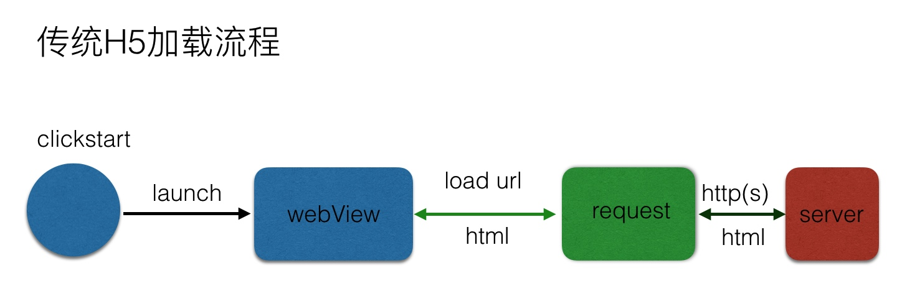
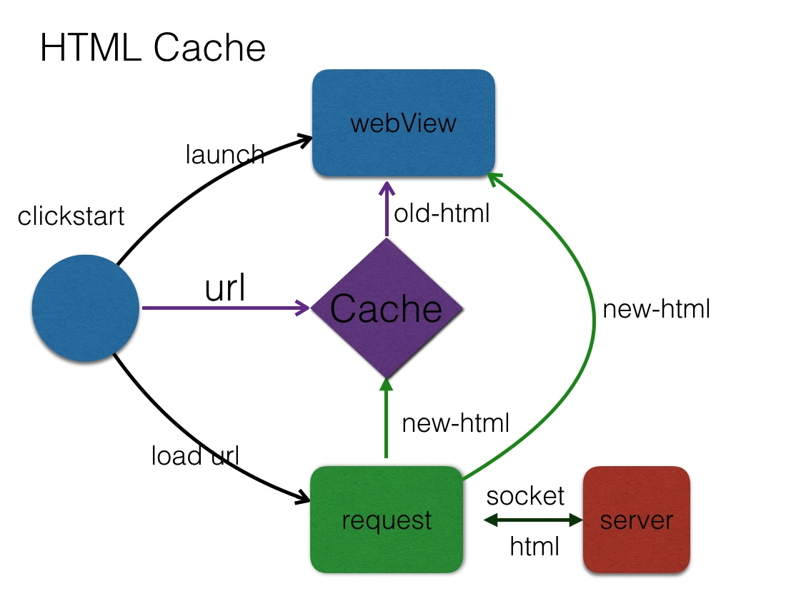
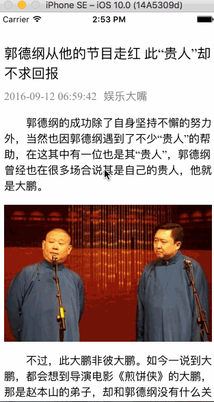

UIWebView可能的优化方案
声明:Socket思想来源于手Q空间团队,Demo中提供了使用Socket模拟HTTP请求.
我们都知道WebView加载页面非常缓慢,如果页面样式结构比较固定,则可以采用自己的自己封装的网络请求去获取数据,然后拼接成HTML显示.
优点:
- 通常webview首次加载非常慢,使用Native网络请求会很快
- 离线包＋预加载(静态HTML、静态JS、静态CSS它们的加载、它们离线的东西）,首屏进入可直接加载默认数据
缺点:
- 静态资源包离线下载,不能保证100%
传统H5加载流程

这里有两个问题：
WebView的耗时
根据手Q的统计数据，Android的WebView平均打开启动的速度耗时是0.8秒，有些Android机型基于系统环境可能需要一点多或者两秒左右；
HTTP协议的网络层
HTTP有DNS或者建立链接的耗时，HTTPS有建立SSL链接的耗时。
所以H5通常带给用户的体验是：我点进来不管是怎么时候，是第一次第二次还是第三次，我点进来先等两秒再说，看两秒白屏后页面才可以加载进来，其实这里我们只做了两个事情去优化首次加载流程：
1. 把WebView启动和发送请求改成并行
客户端在启动WebView的时候同时发起HTML的页面请求，这里可以实现一个效果：本来我的耗时是T1+T2，现在为T1或T2的最大值，这样达到并行加载的效果。

当然这里还有一个优化的空间，我们其实已经由客户端接管了发送网络请求的事情，以前接管的时候是用HTTP协议，比如像iOS用的是URLSession模块，但已经让客户端接管了，为什么不能够更大胆一些呢？
2. Socket通道
其实我们可以不拘泥于数据传输的方式，所以这里我们把一个HTML的加载从HTTP/HTTPS改造成了一个Socket通道，这是一个App里面长连接的管道，如果手机内部有即时通讯模块的话，我们是用这个长连接的通道来做HTML的传输的，它的作用在于只要你的手机QQ能够收发消息，你的HTML页面就能够加载进来，这样就达到体验上的一致性，同时网络也有比较稳定的提升。

我们基本上做了两个事情就达到首次进入加速的目的，但后面才是一个关键：首次进入我们已经做过优化了，但二次进入怎么去做优化去提高它的显示速度呢？
本地缓存

Demo简单介绍
关于加载优化Demo,地址:https://github.com/Mekor/Optimization-of-webView
webView加载耗时问题解决方案简介:
- 如果有界面变动不大,可以吧HTML直接在本地存放一份,然后从网上请求数据,拼接成HTML,这样加载速度会很快.这种可以参考用户版商品的图片简介.
- 如果内部动态变化的,但是样式和交互式规定好的,可以在本地存放一份,当然也可以每次启动app的时候更新本地存放的静态资源.这样的好处就是每次只替换更新的内容.
下面以网易新闻为例,这里我抓包网易新闻的请求,新闻详情: http://c.m.163.com/nc/article/C0OBRVC7051789DB/full.html
这里我们可以看出,网易新闻也不是直接用webView加载url的方式显示的.
{
"C0OBRVC7051789DB": {
"body": "<p> 郭德纲的成功除了自身坚持不懈的努力外，当然也因郭德纲遇到了不少“贵人”的帮助，在这其中有一位也是其“贵人”，郭德纲曾经也在很多场合说其是自己的贵人，他就是大鹏。</p><!--IMG#0--><p> 不过，此大鹏非彼大鹏。如今一说到大鹏，都会想到导演电影《煎饼侠》的大鹏，那是赵本山的弟子，却和郭德纲没有什么关系。而帮助过郭德纲，使得其相声在北京能广受欢迎的大鹏，则是北京文艺广播《开心茶馆》主持人康大鹏。</p><!--IMG#1--><p> 康大鹏作为电台节目主持人，在没有听到郭德纲相声之前，给听众播放的也是一些经典的相声段子，不过翻来覆去时间长了也令听众生厌，久而久之就没有了兴趣。在这种情况下，大鹏听了郭德纲的相声后，才感到眼前一亮。</p><!--IMG#2--><p> 当时的郭德纲，虽然在北京也开始站住了脚跟，但是仅限于小部分观众知道，并且据说还备受各方打击，所以才会在相声中经常有“怨言”。在大鹏看了德云社郭德纲的相声后，认为这是个机会，德云社也需要听众，也需要帮助。</p><!--IMG#3--><p> 于是，大鹏就开始到德云社录音，然后播放给听众听。这在当时，也是一个不小的举动。毕竟郭德纲在当时还名不见经传，而为郭德纲录音还需要大鹏自己掏腰包购买录音器材，至于播出后效果如何也担有一定风险。</p><!--IMG#4--><p> 也正如大鹏所想象，郭德纲的相声在电台播出后便反响强烈，使得很多观众都开始迷上了相声，也迷上了郭德纲。在拥有了大批粉丝后，据说郭德纲随后开办了一场大型纪念演出，当时有不少电视台和电台的领导观看，而在郭德纲相声结束后，大鹏还给台下领导来了一个惊人的一跪。</p><!--IMG#5--><p> 虽然只是单膝点地，但在当时的报纸也给出了惊天一跪的标题，而大鹏的这一跪，也使得郭德纲和电视台结缘。尽管郭德纲的成名和大鹏有着不可分割的关系，但大鹏还是很谦虚的说两者是相互的关系，因为节目需要听众。</p><!--IMG#6--><p> 在郭德纲进入北京电视台主持《星夜故事秀》节目时，这也是郭德纲和北京电视台合作最好的时期，堪称两者的“蜜月期”。只是随着郭德纲的成名，郭德纲后来又转战到了天津卫视，自己在北京电视台的节目则交给了何云伟和李菁来做。</p><!--IMG#7--><p> 这其中的原因，有人说是因为报酬方面产生了分歧，说白了其他电视台给了更高的价钱。所以北京电视台才会批郭德纲“忘恩负义”，因北京电视台为郭德纲的宣传做了很大的努力，但也有人说是因郭德纲的加盟，才使得北京电视台节目火了起来。谁是谁非莫衷一是。</p><!--IMG#8--><p> 至于后来，两者闹得更是不可开交，直到最后变成了“冤家”。而和北京电视台闹分裂后，对原电台主持人大鹏自然也是有很大的影响，毕竟电视台和电台也是一脉相承的关系，不可能不对大鹏产生影响。</p><!--IMG#9--><p> 对与错是与非都是难以说清，正如大鹏所说，郭德纲的相声给其节目带来了听众，而电台也给郭德纲带去了名气，两者也是相辅相成。但不管怎样，大鹏的确是郭德纲演艺路上的一位“恩人”，起码让其早点脱颖而出扬眉吐气了。</p><p> 特别声明：本文为网易自媒体平台“网易号”作者上传并发布，仅代表该作者观点。网易仅提供信息发布平台。</p>",
"users": [],
"replyCount": 1893,
"ydbaike": [],
"link": [],
"shareLink": "http://c.m.163.com/news/a/C0OBRVC7051789DB.html?spss=newsapp&spsw=1",
"votes": [],
"img": [
{
"ref": "<!--IMG#0-->",
"pixel": "400*263",
"alt": "",
"src": "http://dingyue.nosdn.127.net/s9VWjHPwFtTeqKoYJBULaIbs5TmzcYeGFQeljU0IFvZrD1473633706236.jpg"
},
{
"ref": "<!--IMG#1-->",
"pixel": "412*256",
"alt": "",
"src": "http://dingyue.nosdn.127.net/6DXnTuxZs2jvgFJLMW2svrKoh1=KTYXhGwGUH2JlqdpZq1473633736663.jpg"
},
{
"ref": "<!--IMG#2-->",
"pixel": "380*246",
"alt": "",
"src": "http://dingyue.nosdn.127.net/H5jHhCfSD5uhRhMFrHwze4LgrK97qwcG1GkwWGRZcOeqe1473633752645.jpg"
},
{
"ref": "<!--IMG#3-->",
"pixel": "360*286",
"alt": "",
"src": "http://dingyue.nosdn.127.net/udjNFCksz6Fc7fCFAzCBwzUYxWB1TJUVis97X5ZRHpqg61473633775305.jpg"
},
{
"ref": "<!--IMG#4-->",
"pixel": "407*255",
"alt": "",
"src": "http://dingyue.nosdn.127.net/7mbZrlli2D70eS9WHoRmd54RDkr6onqv8Zl1h6V5zJraj1473633824123compressflag.jpg"
},
{
"ref": "<!--IMG#5-->",
"pixel": "400*266",
"alt": "",
"src": "http://dingyue.nosdn.127.net/HVmr=qRm5YReXaRAJBcSaI6WJpMn6DkKHJIVJBdbqMOYY1473633850729compressflag.jpg"
},
{
"ref": "<!--IMG#6-->",
"pixel": "380*232",
"alt": "",
"src": "http://dingyue.nosdn.127.net/HQUW=i7soYmJqlUDaS1iv6pGBI9NzCdFqYU=yC=QT8BDQ1473633896632.jpg"
},
{
"ref": "<!--IMG#7-->",
"pixel": "294*220",
"alt": "",
"src": "http://dingyue.nosdn.127.net/lEs43YivpKRxQqZPlmaIo=SpEOdRTqeYUywHCLqwIqR111473633914904.jpg"
},
{
"ref": "<!--IMG#8-->",
"pixel": "402*238",
"alt": "",
"src": "http://dingyue.nosdn.127.net/bhzvrmx8JUQHVViXI5VKqvHG=c5RIIxx0dssbfTNM7mfE1473633962043.jpg"
},
{
"ref": "<!--IMG#9-->",
"pixel": "329*220",
"alt": "",
"src": "http://dingyue.nosdn.127.net/tN7dLuyOJ0SU3kXoPRrLdXkVMZGJtiS97Qh46opqH2Q0N1473634186617.jpg"
}
],
"digest": "",
"topiclist_news": [],
"dkeys": "null",
"topiclist": [
{
"hasCover": false,
"subnum": "2.8万",
"alias": "娱乐八卦、影视评论",
"tname": "娱乐大嘴",
"ename": "T1439876075818",
"tid": "T1439876075818",
"cid": "C1374475306828"
}
],
"docid": "C0OBRVC7051789DB",
"picnews": true,
"title": "郭德纲从他的节目走红 此“贵人”却不求回报",
"sourceinfo": {
"alias": "娱乐八卦、影视评论",
"ename": "T1439876075818",
"tname": "娱乐大嘴",
"tid": "T1439876075818"
},
"tid": "",
"template": "normal1",
"threadVote": 108,
"askbar": [
{
"title": "主持人",
"headpicurl": "http://dingyue.nosdn.127.net/27vmGgL=A4BbmMAUJIEOEJ2vUlnvIGE9Ufum0roxEDigT1472456332076.jpg",
"alias": " 我是河北交通广播主持人月色，关于主持、情感和各种天马行空的问题，问我吧！ ",
"expertId": "EX880112773195081120",
"name": "月色",
"concernCount": 6341
}
],
"threadAgainst": 49,
"boboList": [],
"articleTags": "网易号",
"replyBoard": "dy_wemedia_bbs",
"source": "娱乐大嘴",
"huati": [
{
"topicId": "SJ02345751487819348812",
"topicName": "郭德纲"
},
{
"topicId": "SJ1851570047893940154",
"topicName": "赵本山"
}
],
"hasNext": false,
"voicecomment": "off",
"apps": [],
"relative_sys": [
{
"id": "C0RN7O7N00034VR2",
"title": "郭德纲的综艺版图:交人脉、捧新人、强化德云IP",
"source": "网易娱乐专稿",
"imgsrc": "http://cms-bucket.nosdn.127.net/a11079eb004f445abdb7146850e4810d20160913141047.jpeg",
"docID": "C0RN7O7N00034VR2",
"from": "HZ",
"type": "doc",
"ptime": "2016-09-13 14:13:21",
"href": ""
},
{
"id": "C0DBP4LV0517ACQ1",
"title": "老梁说天下：郭德纲为什么这么能“惹事儿”",
"source": "纵横娱乐",
"imgsrc": "http://dingyue.nosdn.127.net/sYo3zfohiqrXHHZIhYV0wqZTpE7RavK7qWneE4BsRH6O=1473265404780compressflag.png",
"docID": "C0DBP4LV0517ACQ1",
"from": "HZ",
"type": "doc",
"ptime": "2016-09-08 00:23:46",
"href": ""
},
{
"id": "C0R1QGIN051789DB",
"title": "唯一被戏称德云社第一女弟子女星，却是郭德纲铁杆粉丝",
"source": "娱乐大嘴",
"imgsrc": "http://dingyue.nosdn.127.net/I=T7AyADVhb6T8KiCoR0Yw0mKqBXyzUNKWyafBy9PRvxF1473724249899.jpg",
"docID": "C0R1QGIN051789DB",
"from": "HZ",
"type": "doc",
"ptime": "2016-09-13 08:01:08",
"href": ""
}
],
"ptime": "2016-09-12 06:59:42"
}
}
我们可以看出, body 里面是配置好的html,同时里面也给出了图片占位符类似于 <!--IMG#0-->,通过 img 数组里面的的内容进行替换,img里面提供类似
{
"ref": "<!--IMG#0-->",
"pixel": "400*263",
"alt": "",
"src": "http://dingyue.nosdn.127.net/s9VWjHPwFtTeqKoYJBULaIbs5TmzcYeGFQeljU0IFvZrD1473633706236.jpg"
},
提供了 body 里面的占位符,同时还提供了,pixel,alt,src等.这时我们可以做的事情就多了,根据占位符替换 body 中的占位,通过原生网络下载图片等等.Demo中我只做了简单的HTML拼接.拼接好HTML在把本地的模板添加进去,比如css,js等.最后直接把拼接好的完整的HTML给webView,让其显示.具体Demo已经提供了,仅供参考.效果图:

(仅供参考,css我只是简单的按照大概写的,勿喷)
Socket模拟HTTP请求
第二个Demo中模拟了Socket发送HTTP请求的方式,当然我这里只是猜测手Q的实现方式.需要注意的地方就是拼接请求头.
//拼接http请求
NSString *request = @"GET / HTTP/1.1\n"
"Connection: Close\n"
"Host: m.baidu.com\n"
//告诉服务器客户端是mac
"User-Agent: Mozilla/5.0 (Macintosh; Intel Mac OS X 10_10_2) AppleWebKit/537.36 (KHTML, like Gecko) Chrome/40.0.2214.115 Safari/537.36\n\n";